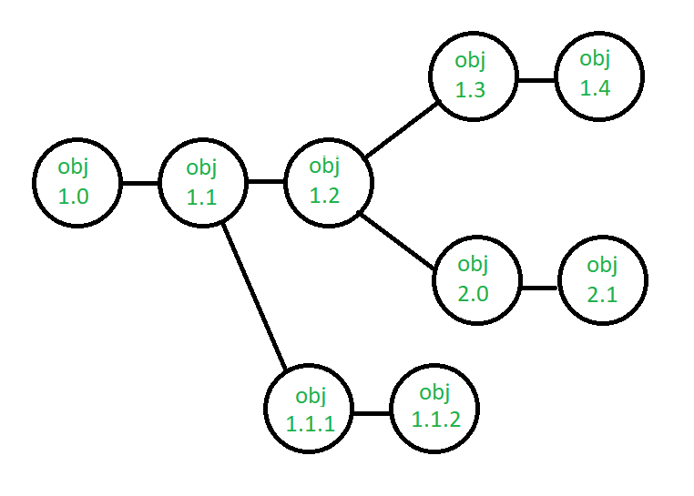
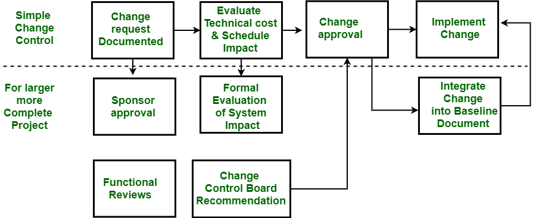

9.5 Change Control Process
The change control process is the formal procedure through which modifications to configuration items are requested, evaluated, approved or rejected, implemented, and verified. Change control is part of overall change management and ensures that quality and consistency are maintained whenever the software configuration is modified.
Objectives of change control
- Change control aims to identify, evaluate, prioritise, and control changes requested by team members or stakeholders.
- Changes must be analysed before implementation, recorded with before-and-after details, and reported to all affected parties.
- The process prevents uncontrolled modifications that could undermine a well-managed software project.
- Change control is one of the five SCM activities — see §9.4 SCM Activities.

Steps in the change control process
- Submit Change Request (CR): A team member or stakeholder documents the proposed change, its reason, and the affected configuration items.
- Evaluate the change: Assess technical merit, potential side effects, overall impact on other CIs and system functions, and projected cost of the change.
- Prepare change report: Document the evaluation results for review by the decision authority.
- CCB decision: The Change Control Board (CCB) — a person or group with authority — makes a final decision on the status and priority of the change.
- Generate ECR (if approved): An Engineering Change Request is created describing the change, constraints to be respected, and criteria for review and audit.
- Check out, modify, test: The affected CI is checked out of the project database, the change is implemented, and the modified object is tested.
- Check in and create new version: The object is checked back into the repository and version control mechanisms create the next version of the software.
- Notify if rejected: If the CCB rejects the change, the requestor is notified with a proper reason.
change_control_process.pseudo
CHANGE_CONTROL(configuration_item CI)
STEP 1 — SUBMIT
REQUESTOR submits Change Request (CR)
DOCUMENT: reason, affected CIs, proposed modification
STEP 2 — EVALUATE
ASSESS technical merit of change
ASSESS potential side effects on other CIs and system functions
ESTIMATE overall impact and projected cost
PREPARE change report with evaluation results
STEP 3 — CCB DECISION
CHANGE CONTROL BOARD (CCB) reviews change report
DECIDE: APPROVE | REJECT | DEFER
IF REJECTED THEN
NOTIFY requestor with reason → END
END IF
STEP 4 — IMPLEMENT (if approved)
GENERATE Engineering Change Request (ECR)
DESCRIBE change, constraints, review/audit criteria
CHECK OUT CI from project database
IMPLEMENT modification
TEST modified CI
STEP 5 — CHECK IN
CHECK IN CI to project database
CREATE new version using version control mechanisms
UPDATE configuration status accounting records
NOTIFY stakeholders of approved change
END CHANGE_CONTROLRoles in change control

- Interested party (requestor): Documents and submits the change request with justification and impact description.
- Project manager: Acknowledges the request and ensures it is routed to the appropriate reviewers and the CCB.
- Change Control Board (CCB): Logs the request in the tracking system, evaluates priority, and makes the final approve/reject decision.
- Project team member (reviewer): Reviews the technical worthiness of the proposed change and provides assessment input to the CCB.
- After a decision, the requestor is informed of the outcome — approved changes proceed to implementation; rejected changes are documented with reasons.
Guidelines for making changes
- No silent changes: Every modification must go through the formal change control system — ad hoc edits are not permitted on baselined items.
- Preserve quality: Changes must not degrade the overall quality of the product; testing is mandatory before check-in.
- Formal system with flexibility: The process must be rigorous enough to prevent chaos but flexible enough to accommodate legitimate urgent fixes.
- Maintain records: All change requests, decisions, and implementations are documented for audit and traceability.
- Revise the plan when needed: After a major lifecycle phase or significant change to deliverables, schedule, budget, or approach, the project plan is revised and approved by senior management.
- Projects requiring scope or product changes must have a configuration management plan as part of the overall project documentation.
Change control in requirements management
- Proposed requirement changes are logged, assessed for impact on cost, schedule, and design, and approved or rejected by the CCB — see §4.7 Review & Management of User Needs.
- Each requirement should be uniquely identified for traceability so that changes can be tracked from SRS through design, code, and test.
- Change control connects SCM to SQA — SQA ensures adequate change management practices are followed — see §8.2 SQA.
Exam question — Change Control Process
Q: Describe the change control process in SCM. Explain the role of the CCB and list guidelines for making changes.
Model answer points:
- Change control = formal procedure for requesting, evaluating, approving, implementing, verifying changes to CIs.
- Steps: CR → evaluate (merit, side effects, impact, cost) → change report → CCB decision → ECR → check-out → modify → test → check-in → new version.
- CCB = person/group with authority to approve/reject/defer changes; logs requests; notifies requestor.
- Roles: requestor, project manager, CCB, team reviewer.
- Guidelines: no silent changes, preserve quality, formal yet flexible, maintain records, revise plan when significant changes occur.
- Requires configuration management plan for scope/product changes.